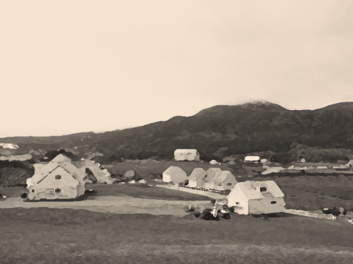
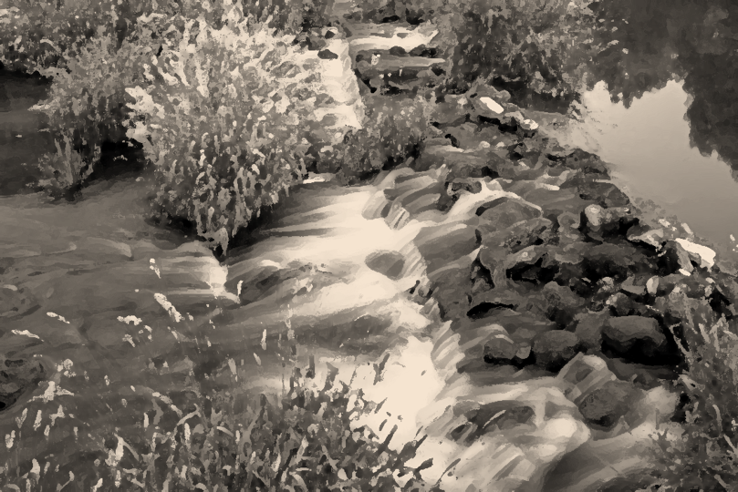

Welcome to The Lowlands
of Asghbgahn.
Grass. Fields. Sky. Is that unexpected?
The Path.
It is a path. An ordinary dirt path through the plains. There is not much to see here.
Onwards.
The Village.
The Village is one of the many small, near-identical settlements scattered across The Lowlands. This particular one, in the middle of The Plains, has a population of exactly 100 101.5 and was established in the peak of the 5th to last cycle. As a small farming town on the outskirts of Asghbgahn, it has little significance.
The People.
The people stand idle.
No, they are not idle. They are simply contemplating.
Onwards.
The Stream.
Just a half-hour walk north from the village. This stream is but a small branch of the greater Delta, where The River, flowing from the north, divides and enters the northern Sea.
The Water.
It is water. That you can be sure of.
The Foliage.
It is foliage. That you can be sure of.